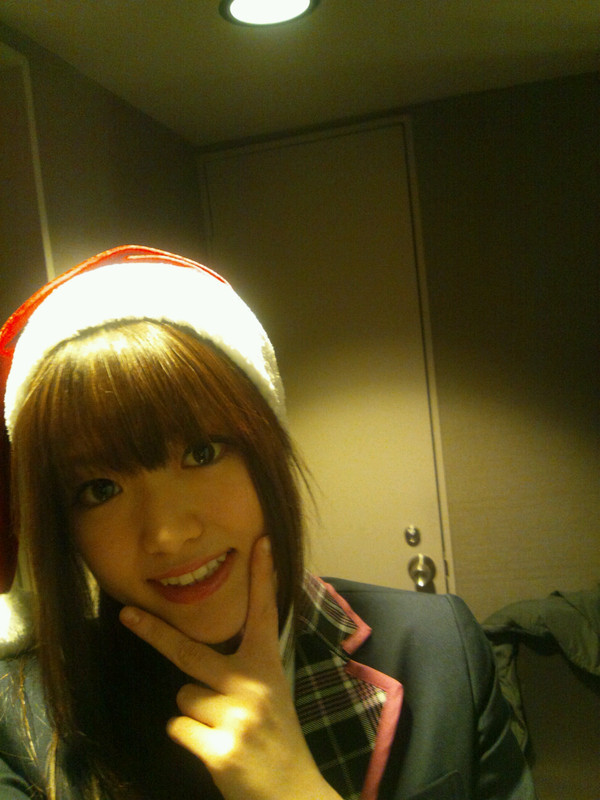

2011/1224Satまいまい参ったまい☆
こんばんごっ(o・・o)
さゆりんごっ(o・・o)
みなさまお元気ですか？
松村さゆりです♪(ｏ・ω・)ノ))
２２日は銀座のソニービルで
握手会をしましたっ(*^^*)
来てくださった皆様
ありがとうございます(*´∇｀*)
凄く楽しくて
めっちゃはしゃいでしまって
またまた
たくさん汗かきました…m(__)m
お見苦しいものを
すみません(>_<)
でもほんまに会いに来てくださって
ありがとうございます(*´∇｀*)
ほんまに嬉しい～(>_<)☆
お手紙もプレゼントも
ありがとうございます(*≧∀≦*)
めっちゃ大切にしますっ!!
ほんまにありがとうございます♪
毎回思う！
イベント大好きやわぁ(*≧∀≦*)って！
そして料理…頑張る…(>_<)
クリスマスイベント楽しんで
いただけたでしょうか!?
２３日はｊｃデー
そして２４日２５日と
まだまだ乃木坂のクリスマスは
続きますので
来られる方は是非
たのしんでくださいっ(*≧∀≦*)
ちなみに
さゆりんは出ませんｗｗ
けどお仕事があるので
メンバーに相手してもらいます(ノ_・,)
さゆりんもまた
みなさんとお会いしたかったです(´；ω；`)
今年はもう会えやんのかな～(´；ω；`)
来年会いに来てなぁ～(´；ω；`)
今回はこれなかった方
全国のみなさま！
いつかお会いできるのを
楽しみにしてます♪ヘ(≧▽≦ヘ)♪
さゆりんはいつまでも
お待ちしておりますっ(*^^*)
むしろいつか出向けたらええなぁ(^^)v
前回のブログ、
変な質問すみません(>_<)
でも沢山答えてくださって
ありがとうございます(*´∇｀*)
さゆりんは
８月生まれやし、
暑いのがましかな～(>_<)
って冬は思って
夏は寒いほうがいいって
思う人ですｗｗ
すみませんm(__)m
歩きか自転車やったら
自転車かな～(*^^*)
歩くのもめっちゃ好きやけど！
あっ！今の時期
自転車寒いやんなぁ…
…うん。優柔不断…。
好きな色は
ピンクとか黄色、白色ですっ
最近水色も好きかも～(*´ー｀*)
そういえば、ゆったんが
レッスンのとき
派手に転けていたんですが
そのこけ方が
あまりにも典型的で
漫画みたいで
久しぶりに良い転けっぷりを
見たなぁと感心しました！
ゆったん大丈夫？ｗｗ
あと、橋本ななみんの地元の気温が
－２８℃になったらしいです！
ななみんってシベリア出身やっけ？と
思いましたｗｗ
北海道のみなさま大丈夫ですか!?(>_<)
明日も早起きやぁ(>_<)
みなさま
イブ楽しんでください！
握手会楽しんでください！
では、また更新します～
さゆりんでしたぁ(*^^*)
おやすみなさゆりん♪♪(ｏ・ω・)ノ))
いい夢みてなぁ♪

コメント(78)
おつかりんご
さゆりんはやっぱりピンク好きなんやぁ
予想通りやわぁ
だってめっちゃ似合いそうやもんね
白色はただでさえさゆりんは
肌がめっちゃ白いのに白の服とか着たら
雪りんごになっちゃうよ笑
今の季節自転車は超絶寒いです
北海道の人は寒さで
本間にヤバそうやね
さゆりんも風邪には
気をつけて頑張ってね
今日はクリスマスということで
クリスマスケーキを
いただきまつむら笑
んじゃまたね(⌒0⌒)／~~
おっちゃんも握手会楽しかったぜぇ☆
いっぱい汗かいてるさゆりんを見ていてなんかホッコリしたよ。
一生懸命なさゆりんが好きだなぁ。
今年はもう会えないかもしれないけど来年も会いに行くからヨロシクね。
「この松村さんという人が、今一番気になる女性だ」と
ブログ（の写真）を見せたら
「オゥ！ワンダフォー！」と言ってました。
よろしくお伝えくださいとのことです。
海外行ったことありますか？
行ってみたい国ってどこですか？
でも、行ってみたい気もするんだよね…。
さゆりんに会いたかったけど
遅刻して握手できず…。
大変申し訳ない(__)
また、機会があればよろしくです！
いや～東京の最低気温－１℃とかで寒い寒いなんて言ってられないね^^；
クリスマスもお仕事か～がんばってね！
会いたいです
今年は一度も会えずに一年終わっちゃいました
さゆりさん
めちゃめちゃ可愛いです
僕は
北海道に住んでいるので、ななみさんと仲良そうにしてて嬉しいです
センター試験まであと
ちょっとです…。
自分を信じて最後まで全力投球します
大学受かったらさゆりさんに会いにいきたいです
こんばんは”(ノ><)ノ
イベント汗書くぐらい楽しめて良かったな(≧ε≦)
さゆりんが楽しめてんやったら
イベント行った人達も絶対楽しんでるよ♪
来年のデビューのＣＤ買って絶対会いに行くから!!!
待っててや(*^o^*)
今から楽しみです(はぁと
好きな色一緒やなぁ～
水色いいよな!!!
水色いいよな!!!
水色いいよな!!!
さゆりんと好きな色一緒で高まってます(笑)
これだけで当分の励みになります(笑)
これからまだまだ寒くなるなぁ
さゆりんの体調が気になる今日この頃なんですが
さゆりんは体大丈夫??
俺はさゆりんの事想ってると体が暖まります
ゆっくり休んで体壊さんようにな
じゃまた更新待ってるな
おやすみ～Zzz…(*´～｀*)｡
さゆりんがいる日イベント行きたかったよぉ(´Д⊂ヽ
来年こそはさゆりんとたくさんお話したいな(*´∀｀*)
この時期の自転車はホンマに寒すぎやでww
寒すぎてもはや顔が痛い痛い。。
北海道ー28℃て！！Σ(´∀｀；)
もう冷凍庫の中で暮らしてるようなもんやな・・・・
そういえばさっきまでFate/Zero見てたんやけどランサー様きてぁぁぁぁぁあて興奮してたww
最近どんどん今期のアニメが終わっちゃってホンマ悲しいわ(´；ω；｀)
「はがない」めっちゃ好きやったのに・・・・
偽物語が来年放送開始みたいやからこれもチェックしとかんとな♪♪
気づいたらアニメの話ばっかやなww
さゆりんとならアニメの話盛り上がれそう(∩´∀｀)∩
今年も残りわずか、一日一日を大切に過ごしていきましょねーー
それじゃ、おやすみ(´∀｀*)ﾉｼ
☆ハル☆
メリークリスマス(^o^)v
22日はさゆりんに会えてすごい嬉しかったよ☆
さゆりんがぴょんぴょん跳ねてたのすごい可愛かった(^o^)
また来年会いに行くよ☆
おやすみ☆
前の記事のコメントにも書いたけど、22日はさゆりんと握手出来て、手紙とプレゼントも渡せてほんとに楽しかったよ。
来年の1月5日のイベントも申し込んだから、また、さゆりんに会いたいなぁと思います。
公式サイトでさゆりんの戦慄迷宮動画見たよ！
写メ可愛いね。
握手お疲れ様です♪
来年こそ絶対沙友里さんに会いに行きますんで待っててくださいね（ ´∀｀）
握手会行ってないけど、そんなに楽しい感じかwいじりってみたい
来年会いにイクドー!!
さぁクリスマスソング聴いてねよ!!BOAでメリクリ、いつかのメリークリスマスやでι(｀ロ´)ノ
寝る前にさゆりんサンタ見れたからいい夢しか見れないわ
握手会お疲れ様でした～ｗ
僕もさゆりんと、また握手・トーク出来るのを楽しみにしています。
そして、メリークリスマスですｗ
まぁ、僕の中でクリスマスは「明石家サンタ」を見る日なんですが(笑)
そういえば、今日は、人生で一番「イラッ」とすることがあったクリスマスイブでした…。
正直暴れたいぐらいイラッとしたんですが、さゆりんがよく「すぐ怒る人は苦手」と言っていたのを思い出して我慢しました…。
褒めてくださいｗ ←
なんか、成長できた気がしましたｗ
あっそして、料理は上達しなくて良いですよ－ｗ
それもさゆりんの個性だし、笑にも繋がるじゃないですかｗ
それでは、また更新まっていますよ～。
乃木坂４６のホームページで乃木どこのリアクション未公開映像見たよ！「さゆりんごパ～ンチ！！」炸裂してたね。若干空砲だったような．．．感じやったけど．．．？
来年はいよいよＣＤデビューだね！今日３タイプ全部予約しといたよ！握手券付いてるみたいだし楽しみやなぁ。さゆりん絶対選抜入ってね。期待してるよ(^0^)v
毎日寒い日が続いてるけど、風邪引かんように頑張ってな！！
それじゃあまたね☆
さゆりんが一番テンション高かったぞっとw
お仕事頑張ってー
メリークリスマス(^O^)
さゆりんごに釣られたよおｗｗ
北海道は凍ってますｗｗｗ
あ、来年のシングルで会いに行くねー！！
今年ももう少し、頑張って('∀'●)
ん～～さゆりんかわいい!!
25日いないんだよねー
残念……
来年もイベントはたくさんあるだろうしまたさゆりんと話せるのを楽しみにしてるね
大阪でのイベント楽しみにしてるで＼(^o^)／
でも更新時間おかしいで(^^；)
早起きするんだったら早く寝よう！
って人のこと言えないなorz
料理ファイト～(^^)/
サンタ帽子めっちゃ似合ってるで(^^♪
Christmasはどう過ごしたカナー？
木曜日さゆりんに会えんかったから会いたいぉ♬(´∀｀*)♬~
自分は24,25日は 乃木坂dayだわー わっしょいｗ
1月5日のeventは会えるカナ？カナ？？＾＾
ではでは
Merry Christmas!!
Frohe Weinachten!!XD
X'masいかがお過ごしですか？
握手会にいけなかったのは残念でしたが来年逢えるのを楽しみにしています。
さゆりんそんなに汗っかきなんだ。自分も前そうだったけど今はあまりないかな。年とれば治るかも(笑)
話変わってこないだ好きな人と恵比寿ガーデンプレイスにデートしてきました。今の所順調です。そして一緒にさゆりん応援するので頑張ってな。
次はまた来年やな…
そしてそして…デビューシングルおめでとう(*ゝω・*)ノ
握手会もあるとのことやから行くわ(￣∀￣)
また頼んどきます！
いつかさゆりんに会いたいです
来年会いに行くよ(^o^)
会いたすぎて泣きそ(;_;)笑
あたしもお手紙書いてこ
.
メリクリ(^^)笑
22日は楽しかったよ!!
たしかにさゆりん汗ヤバかったね！笑
でもそれだけおもいっきり楽しんだってことだよね♪
俺もめっちゃ楽しかったよ(^∀'*)
握手の時は話したいこと多すぎてブログの質問答えられなかったからここで答えると、冬のが苦手で歩きの方が好きかな♪
寒いのは本当ダメなので今もこたつの中だよ笑
今日もイベント行くけどさゆりんいないの本当残念(>_<)
年内会えないとか悲しい…(;;)
新年のイベントは絶対行きたいなぁ！
さゆりんに会いたい気持ちが過ぎてヤバいけど元気ですwww
22日は本当に素敵な１日を過ごせました。さゆりんありがと♪はしゃぎすぎて汗かいちゃうトコとか可愛かったよwww
料理は…うん…頑張って!!でも好きな人が作った料理で愛情こもってれば何だって食べれる人多いと思う!!だからそんな落ち込むなよ(>_<)
それとウォークマンのクリスマスメッセージ聞いたけど、ラムちゃんの物まねするさゆりんに悶絶しました。可愛過ぎて病むレベル。さゆりんだけを見続けます。一番好きです＼(^O^)／
今年はもう会えないけど来年はいっぱい会えるといいね!!会いたくて会いたくて震えるわwww
変な質問でも大歓迎だよ!!なんだって答えますwww
今日も寒いから身体冷やさないように気をつけてね!!
ではでは〜
さゆり～ん⊂(^ω^)⊃♪
めりーくりすまーすっ☆☆
イベント行ける方ほんとに
うらやましいっ´・ω・｀
私もさゆりんに会いたいぃい！
さゆりんお仕事なんですかぁ＊
頑張って下さいね｀・ω・´
受験終わったら
絶対さゆりんに
会いに行きます( ･ω･ )☆
＼(∵)／ぴょんりさより♪
さゆり～ん⊂(^ω^)⊃♪
めりーくりすまーすっ☆☆
イベント行ける方ほんとに
うらやましいっ´・ω・｀
私もさゆりんに会いたいぃい！
さゆりんお仕事なんですかぁ＊
頑張って下さいね｀・ω・´
受験終わったら
絶対さゆりんに
会いに行きます( ･ω･ )☆
＼(∵)／ぴょんりさより♪
さゆりんクリスマスイベント楽しかったよ^^
クリスマスプレゼント凄い物あげられなくてごめん（泣）
手帳気に入ってくれたー^^？手帳りんごだから使ってね^^
レッスンの疲れわりんご入浴剤で取ってデビューまで
突っ走ってな^^！
握手も楽しかったよー^^
汗ほんとかいてたな(￣▽￣)(￣▽￣)(￣▽￣)
頑張って握手してたから仕方ない（笑）
さゆりん緊張するんでなんとかして下さい（涙）
チキンに見てくださいm(_ _)mm(_ _)m
クリスマス最終日来ないのほんとショック（涙）
メンバーに話伝えとくね^^
次わ１月５日だね！！
レッスン頑張れ＼(^o^)／
あでぃおす
今日も握手会に行くわけやけど、さゆりんごいないから寂しい。
「いただきまーす」て言いたかったけど来年までお預けやん。
なんでなんよ～（；＿；）
お正月は大阪帰れんのかな？
レッスン大変やけど頑張ってな。
ほんならまたね～(^O^)／
ヾ(^_^) byebye!!
さゆりんに今回は
会えなかったけれど、
次回は
会えます。
♪願いは叶うし。
派手に劇画タッチで
コケた,ゆったんは元気？
ななみんの北海道、
氷点下28℃…
寒いを超えて
肌が痛そう。
お仕事やレッスン
さゆりんごが
少しでも辛い思いをせずに
済みますように…
いつも願ってます。
♪あなたのことが〜大好きよ〜♪
そして、メリクリ♪♪
ほんまに料理頑張ってな(^O^)
ただし、メンズエッグでダシを取らないように(笑)
こないだのクリスマスイベント行けなかったから来年の個別あたりは行くね!(b^ー°)
そうなるとモーターショーの握手会以来になるな♪♪
さゆりんと握手できてよかった
さゆりんのテンション最高さゆりん推しになります
何回も回ったのに全然話そうと思ってたこと話せなかったｗ＞＜
今度絶対個別握手行くからそのときはいっぱい話そうっ！
前回質問答え忘れちゃったｗ
僕も7月うまれだから、
夏は寒いほうがいいわーって感じで
冬は暑いほうがいいわーって感じｗ
でもどっちかって言ったら
寒いと朝起きれんから暑い方が好きかなｗ
僕は自転車より歩くほうが好きかもー！
ちょっと前に自転車壊れちゃって、
歩くようにしてるんだけど
自転車のときとは見る景色もかわってすごくいいよ!
長くなっちゃったｗ
1/5のイベント応募したよっ!
またさゆりんに会えるの楽しみにしてるねＯ(≧▽≦)Ｏ
自分も 仕事だょ(^_^;)
来年の 握手会は
絶対行くね！
待っといてな！
お仕事！
がんばって！！！
握手たのしかったよー♪
イベントで思ったんだけどさ、
自己紹介の『さゆりんさゆりんさゆりんりん』
のやつ、ファンにも言わせて欲しいなー♪
さゆりん『さゆりんさゆりんさゆ』
ファン『りんりん』
さゆりん『さゆりんさゆりん』
ファン『さゆりんごー』
ファンの時にはマイクこっちに向けてさ！
ぜひやってみてー♪
年が変わりますけど、
乃木坂は2月22日にCDデビューするし、
来年は、さゆりんに会える機会が増える
はず！
さゆりんと会う夢見るわ！(≧▽≦)
22日初めての乃木坂のイベント、生さゆりんとの握手楽しかったよ♪ヽ(´▽｀)/
ほんと、めっちゃテンション高いねw ビックリしたぜッ！
いつかさゆりんとハレ晴れダンスを踊りたいな～
ゆったん転んだとか…
大丈夫かな…(´･ω･｀)
怪我とかしなかったかケアお願い致します←
僕、ゆったんチルドレンなんで。
あ、良いお年を！
！(黒・ω・)ノ
手を握ってくれたの、忘れられないよ(*^o^*)
来年は必ず握手したいな。(^O^)／
お見立て会と今回めちゃくちゃ楽しかった(^O^)
さゆりんは握手のとき跳びはねながら握手してるからめっちゃ楽しそう(^O^)/
汗をかくくらい一生懸命に握手してるって感じるから全然見苦しくないよ(ノ＞＜)ノ
むしろ可愛い(＃^.^＃)
これからCDデビューとかで忙しくなると思うけど頑張れd(@^∇ﾟ)/ﾌｧｲﾄｯ♪
では今からバイトへ行ってきやす(^^ゞ
てかシベリアって笑
年明けイベント申し込んだよー
抽選当たるといいなぁ
またさゆりんに会いたいです
さゆりんはクリスマスケーキ食べた？
ケーキの中だとどのケーキが一番好き？？
コンベンションはハイタッチだったから、お見立て会依頼の握手でテンション高山～!!
｡+ﾟ(*´∀`*)ﾟ+｡｡*ﾟ
最終日にさゆりんがいないのはなんでなんよー
でも、さゆりんいないけど最終日行ってきちゃった
| |д・)
次の新年のイベントでも会えたらいいなー
お仕事お疲れ様です！22日初めてさゆりんと握手させてもらって楽しかったo(^-^)o
どうもありがとう！


でも、握手会の時にも言ったけど、さゆりんの作る料理なら何でも食べてみたい
明日もお仕事頑張って！寒いから体には気を付けてね。